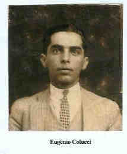
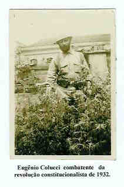
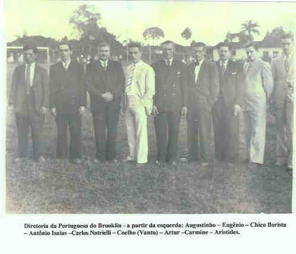

Eugênio Colucci
- Nascido em: 11 Fev 1903, Sp-Sp
- Casamento: Marianina Petrella em 12 Fev 1934 em São Paulo, Sp
- Falecido: 19 Fev 1947, Sp-Sp com 44 anos de idade

 Notas Gerais: Notas Gerais:
Eugênio Colucci (nascido em 11-02-1903 SP-SP), filho de Stefano Colucci nato em 1861 e Maria Mira, nata em 1878, ambos da Comune de Baiano - Província de Avellino - Itália.
Quando meu pai começou a namorar com a mamãe, um dos passatempo era ir dançar no clube Piratininga, localizado na Av. Rangel Pestana . Eles gostavam de dançar, no entanto, havia um porém; a minha vó Filomena ia sempre junto.
Casou com a mamãe em São Paulo -SP no dia 12-02-1934.
Como o meu pai já trabalhava no Rio de Janeiro desde 1933, após o casamento, mamãe foi morar nesta cidade onde, em 1934, nasceu seu primeiro filho, Stefano. O parto foi muito difícil e demorado, o que prejudicou a criança, que apesar de forte (5 kg.) não resistiu e faleceu no mesmo dia. Mamãe permaneceu no Rio até fevereiro de 1935, voltando novamente para São Paulo, onde foi morar na rua Conde de Sarzedas, na Sé, e onde nasceu minha irmã, Maria Helena (Zinha), em 1936.
Em 1937, foi morar no Brooklin, na rua Francisco dias Velho n° 820, onde eu nasci, em 1938.
Um dos passatempo de meu pai era o futebol. Não jogava, mas gostava de assistir ao futebol varzeano e ser juiz em partidas que, na época, eram consideradas grandes jogos.
Por causa desse prazer, fez parte da diretoria do clube Portuguesa do Brooklin.
Segundo Carlinhos Natrielli, "o clube tinha esse nome porque os diretores fundadores (Augustinho, o Chico florista, o Coelho, o padeiro Sr. Artur Salgado), eram portugueses.
O campo da Portuguesa estava localizado entre os atuais Banco Bradesco, na Av. Morumbi com a Santo Amaro, e Banco Itaú, na Av. Santo Amaro com a rua Pássaros e Flores.
Atravessando a rua onde hoje é o colégio Meninópolis, era o campo do Brooklin, todo cercado com sebe viva de ciprestes, e nele jogava a família dos Rivellino.
Geralmente, a Portuguesa sempre ganhava do Brooklin.
No local do supermercado Pão de Açúcar, na Av. Morumbi com a Santo Amaro, no passado era a chácara Preferida (propriedade da Loterias Preferida).
Onde hoje é o Banco Bradesco, antigamente era uma grande padaria. Na sua calçada, bem na esquina, havia a bomba manual de gasolina do sr. Roberto. Ela era uma pequena torre tendo na sua parte superior um bujão de vidro transparente devidamente marcado. Por meio de uma alavanca de vaivém, a gasolina era bombeada para o bujão na quantidade solicitada, 10 litros, 20 litros etc.. Isto feito, ele colocava a mangueira no carro, abria o depósito e deixava esvaziar.
No mesmo lugar, posteriormente, ele instalou uma bomba elétrica.
Entre os jogadores da Portuguesa, para a família, destacavam-se:
Xexê (Carmine Natrielli) que jogava muito bem. Era um jogador clássico e um grande
driblador. Não tinha potência no chute, mas era o artilheiro do time.
Feiticinho (Arnaldo F. de Macedo) jogava na meia esquerda, também era craque. Seu pai, o Tio Feitiço - Luís Macedo, e também meia esquerda, foi um jogador internacionalmente conhecido. Começou jogando na várzea, no Ítalo Lusitano. Posteriormente, em 1938, sagrou-se campeão mundial interclubes, no torneio disputado na Itália, jogando pelo Penãrol do Uruguai. Depois, jogou no Santos, onde encerrou a carreira.
Toninho (Antônio Natrielli), jogava na defesa e era considerado um bom marcador."
Como profissão, meu pai era modelador de calçados, mas sempre sentiu prazer da vida ao ar livre; gostava da terra, das árvores e dos animais.
\tab Todos os dias, acordava às 5 horas, regava as plantas com a água que tirava do poço (essa época era a década de 1940), e depois disso ia do Brooklin, à rua 25 de Março, trabalhar.
\tab Quantas sementes e mudinhas de árvores frutíferas plantou, cuidou e viu vingarem no seu terreno, apenas por satisfação em manter as suas plantações.
\tab Fora as plantações de hortaliças e legumes, ele tinha no pomar as seguintes árvores frutíferas: abacateiro, três pés de laranja lima, mexeriqueira, limoeiro, goiabeira, caquizeiro, lima da Pérsia, pessegueiro, um pé de laranja azeda, um pé de limão francês (laranja capeta), bananeiras, pitangueira, um pé de uvaia, dois caramanchões (um com parreira de uvas brancas e outro de uvas rosadas), maracujá e, margeando as laterais do terreno, 28 ameixeiras (nêsperas). Essas ameixeiras serviam de mourões onde eram presos os fios de arame farpado para cercar os lados da propriedade.
\tab
\tab No fundo do quintal, havia uma sebe de bambu, onde ele criava e sempre tinha, em média, 100 galinhas e uma cabra com cabritinhos (tendo assim leite diariamente para o consumo da família). Este cercado tinha 100 m2 (10m X 10m).
\tab Meu pai, trabalhando na cidade e tendo irmãos casados morando na Moóca, combinou de almoçar na casa de cada um, uma vez por semana. Para " mostrar seu trabalho", levava com prazer e orgulho todos os dias, uma cesta pesada e cheia de verduras, hortaliças, frutas e ovos para o irmão onde ia almoçar.
\tab Notem que todos os meus tios trabalhavam e nenhum deles necessitava dessa "cesta". Era apenas uma satisfação pessoal dele dizer que era colhido na sua casa.
\tab Na época de Natal, apetitosos cachos de uvas eram colhidos e distribuídos entre os familiares e amigos.
\tab Papai, era muito alegre e muito brincalhão. Enquanto viveu, desfrutou bons momentos em contato com os familiares e com a natureza.
\tab Eugênio Collucci faleceu no dia 19 de fevereiro de 1947, uma quarta-feira, aos 44 anos de idade e seu corpo foi sepultado no Cemitério do Brás antigo, Quarta Parada, na campa da família.
C. as. As plantações permaneceram na casa após a morte do Eugênio e todos sobrinhos- netos da Marianina iam constantemente degustar as frutas nos pés.
É deveras curioso porque, na casa do Nunzio, irmão da Marianina, e que morava perto, havia um pomar bem maior e repleto de variedades frutíferas, porém na casa da Marianina sempre havia crianças comendo frutas.
\tab
\tab
Eventos notáveis em Sua vida foram:

(Clique na Foto para vê-la no Tamanho Original)")
• fotos: Marianina e Eugênio.

• fotos: Eugenio Colucci.

• fotos: Eugenio Colucci combatente de 1932.

• fotos: diretoria da Portuguesa.

(Clique na Foto para vê-la no Tamanho Original)")
• fotos: Marianina - Eugenio - Neuza e Maria Helena.
Eugênio casad[:o::a] Marianina Petrella, filha de Rocco Petrella e Filomena Di Bacco, em 12 Fev 1934 em São Paulo, Sp. (Marianina Petrella nasceu em em 5 Ago 1901 em Fazenda Neca Junqueira, Ribeirão Preto - Sp e faleceu em 9 Abr 1992 em Brooklin - Sp/Sp.)
|